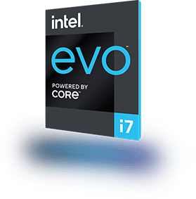

Inilah laptop generasi baru
Dirancang berdasarkan platform Intel® Evo™, diverifikasi untuk memberikan pengalaman luar biasa, di mana pun.
Didukung prosesor Intel® Core™ Generasi ke-11 dengan grafis Intel® Iris® Xe

Nikmati performa ultra responsif dari prosesor Intel® Core™ Generasi ke‑11.
Tampilan yang indah menghidupkan visual Anda dengan resolusi yang tajam dan warna yang hidup.
Dengan pengaktifan cepat, PC Anda dapat beralih dari mode tidur menjadi siap digunakan dalam waktu kurang dari satu detik.
Obrolan video atau berbagi file dengan koneksi yang dapat diandalkan menggunakan Intel® Wi-Fi 6 (Gig+).1
Menghubungkan perangkat lain ke PC Anda menjadi mudah, cepat, dan aman dengan teknologi Thunderbolt™ 4.2
Tetaplah bekerja dengan PC yang mengoptimalkan masa pakai baterai dan mengisi daya dengan cepat.

Teknologi Intel mungkin memerlukan perangkat keras, perangkat lunak, atau aktivasi layanan yang mendukung.
Hasil performa berdasarkan pengujian per Agustus 2020 dan mungkin tidak mencerminkan semua pembaruan yang tersedia untuk umum. Lihat pengungkapan konfigurasi untuk detailnya. Teknologi Intel mungkin memerlukan perangkat keras, perangkat lunak, atau aktivasi layanan yang mendukung. Tidak ada produk atau komponen yang sepenuhnya aman. Biaya dan hasil Anda mungkin berbeda. Untuk informasi selengkapnya tentang hasil performa dan benchmark, kunjungi intel.com/11thgen.
1Hanya SKU tertentu, fungsi beragam tergantung desain OEM. Untuk detail konfigurasi sistem, hubungi OEM atau peritel. Produk Intel® Wi-Fi 6 (Gig+) mendukung saluran 160 MHz opsional, memungkinkan kecepatan maksimum teoretis tercepat (2402 Mbps) untuk produk Wi-Fi PC 2x2 802.11ax pada umumnya. Produk Intel® Wi-Fi 6 (Gig+) premium memungkinkan kecepatan maksimum teoritis 2-4X lebih tinggi dibandingkan dengan produk Wi-Fi PC 2x2 (1201 Mbps) atau 1x1 (600 Mbps) 802.11ax standar, yang hanya mendukung persyaratan wajib saluran 80 MHz. Untuk informasi selengkapnya tentang Intel® Wi-Fi 6 (Gig+), kunjungi intel.com/wifi6disclaimers.
2Tidak ada produk atau komponen yang sepenuhnya aman.
3Sebagaimana diukur dengan alur kerja Pengeditan Video. Prosesor: Intel® Core™ i7‑1185G7 PL1=15 W dengan Intel® Dynamic Tuning Technology (Intel® DTT) aktif, 4C8T, Memori: LPDDR4-4267 MHz, 16 GB (2x8 GB), saluran ganda dan rank ganda, Penyimpanan: Intel® SSD 660p M.2 PCIe NVMe, Resolusi Layar: 1920x1080 kecuali beban kerja Lifestyle (4K), OS: Microsoft Windows* 10 20H1-19041.326 Kebijakan daya diatur ke mode AC/Seimbang untuk semua benchmark, kecuali SYSmark 25 yang diukur dalam mode AC/BAPCo untuk Performa. Setelan daya diatur ke mode DC/Seimbang untuk daya dengan UX Slider diatur ke Baterai Lebih Baik. Semua benchmark berjalan dalam mode Admin, Grafis: Intel® Iris® Xᵉ, Driver grafis: 27.20.100.8431, Versi BIOS: TGLSFWI1.R00.3284.A00.2007091654 yang diukur pada board referensi Intel. Suhu: Tc=60c untuk semua pengukuran performa IA. Tc=85c untuk semua pengukuran performa Grafis. Performa dengan Intel® DTT akan beragam tergantung pada pilihan desain sasis, batas suhu sasis, solusi pendinginan, faktor bentuk (dimensi xyz), aliran udara, dan suhu udara sekitar. Prosesor: Intel® Core™ i7‑8550U PL1=15 W, 4C8T, Memori: LPDDR4-1866, 2x4 GB, Rank Ganda, Penyimpanan: Samsung PM961 NVMe 256 GB, Resolusi Layar: 1920x1080, OS: Microsoft Windows* 10 10.0.19041.421, Grafis: Intel® UHD Graphics, Driver grafis: 26.20.100.7986, Versi BIOS: 1.12.1 yang diukur pada Dell XPS.
4Mengukur responsivitas rata-rata dari 6 desain premium berbasis platform Intel® Evo™ gelombang pertama dengan OS Windows saat menjalankan 25 alur kerja yang mengukur performa dalam lingkungan penggunaan umum yang terdiri dari beberapa aplikasi lokal dan berbasis cloud serta halaman web, termasuk Google Chrome, Google G-Suite, Microsoft Office 365, YouTube, dan Zoom, dibandingkan dengan desain setara berumur 2 tahun. Pengujian dilakukan pada laptop dengan baterai DC ≥30%, yang terhubung ke nirkabel 802.11, dan dengan konfigurasi perangkat keras bawaan termasuk Windows 10 dan kecerahan layar LCD 250 nit. Hasil pengujian per bulan Agustus 2020, dan tidak menjamin performa masing-masing laptop. Kemampuan dan performa beragam berdasarkan penggunaan, konfigurasi, dan faktor lain.
© Intel Corporation. Intel, logo Intel, dan merek Intel lainnya adalah merek dagang dari Intel Corporation atau anak perusahaannya. Nama dan merek lain adalah hak milik dari masing-masing pemiliknya.